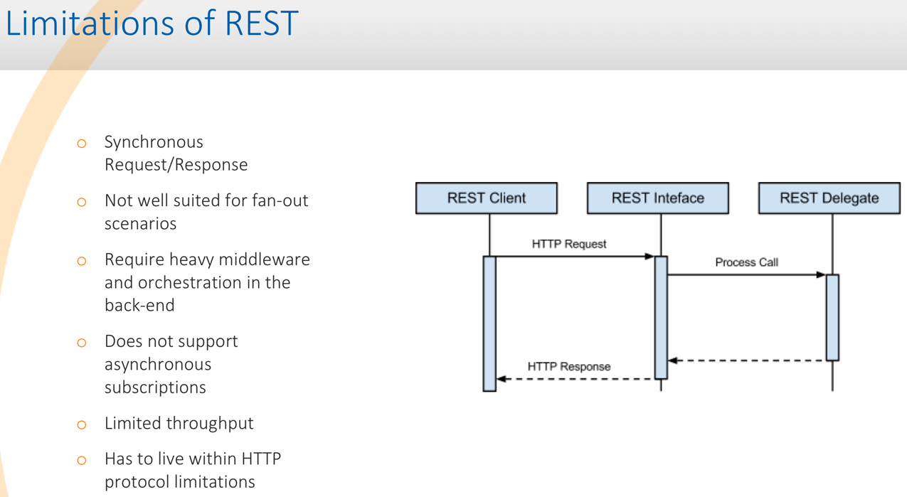

Insurance Agent Mobile App Demo
Demo Technical Details
Typical REST Architecture

This diagram shows a typical REST architecture.
Challenges & Limitations

This is a brief explanation of the challenges and limitations one runs into when using REST to link applications.
Benefits of Solace REST

This is a brief explanation of the benefits of using Solace's REST support to link applications.
Technologies/Infrastructure Used
- Solace VMR running on AWS
- NGinx running on AWS for reverse proxy balancer and to handle the CORS issue.
- MySQL DB running on AWS
- HTML5
- REST
- Java based app running in Fuse (ESB) on AWS